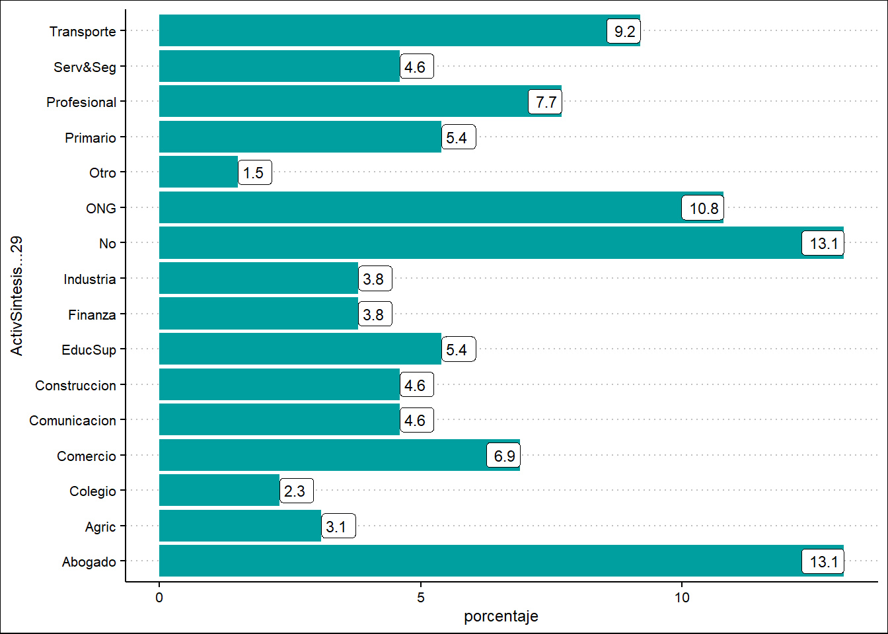

Mostrar código
library(tidyverse)
library(readxl)Diego Sánchez
Que el Congreso de la República sea una de las instituciones más odiadas por la ciudadanía ya no es una novedad. De acuerdo a datos del Barómetro de las Américas, entre los años 2006 y 2019 el porcentaje de peruanos y peruanas que manifestó confiar en esta institución pasó del 32.6% a 20.9%. Esta última cifra no solo representa un mínimo histórico desde que se empezó a realizar la ronda de encuestas del Barómetro sino que también nos sitúa en los últimos lugares a nivel regional (Carrión et al., 2020).
No resulta demasiado arriesgado hipotetizar que una parte importante del desprestigio que ha ido ganado el Congreso a lo largo de los últimos años se explicaría por el pobre desempeño que muestran las diversas bancadas congresales en las diversas funciones que esta institución realiza. Casi a diario, la prensa muestra situaciones como proyectos de ley presentados por los congresitas cuentan con serios conflictos de interés o que, cada cierto tiempo, descaradas “repartijas” a la hora de nombrar altos funcionarios en puestos como la Defensoría del Pueblo o el Tribunal Constitucional o diverso tipo de “blindajes” a diversos miembros del parlamento con serios procesos judiciales.
Con el fin de contribuir a comprender el bajo desempeño del Congreso en el desarrollo de sus funciones, el presente trabajo apunta a identificar las características de la trayectoria laboral de los congresistas. Más específicamente, se apuntará a responder las siguientes interrogantes con respecto a sus respectivas trayectorias laborales: 1) ¿Cuentan con experiencia política previa?; 2) ¿Qué nivel nivel educativo cuentan?; 3) ¿A qué tipo de universidad acudieron?; 4) ¿Qué tipo de carreras profesionales han estudiado?; 5) ¿En qué sectores se han desempeñado laboralmente?; 6) ¿En qué tipo de organizaciones han participado?.
Con el objetivo de trabajar los datos seleccionados para este trabajo, se utilizaron dos paquetes: readxl y la colección de paquetes tidyverse. El primer paquete permite la lectura de archivos con extensión .xlsx. Esta extensión pertenece al programa Office Excel y es el formato de documento en el que se encuentra disponible la data con la que se trabajó. Por su parte, el segundo paquete nos permite desarrollar la limpieza de los datos, así como ejecutar funciones que ayudan con la organización, el filtrado y la selección de variables relevantes. Otro aporte de este paquete es que permite presentar la información extraída de la data a través de gráficos que pueden ser creados con la función ggplot.
library(tidyverse)
library(readxl)Este trabajo empleó una base de datos orginal formulada en conjunto por los investigadores Artthur Morenas, Mauricio Rentería y Diego Sánchez. la cual sistematiza los datos de las hojas de vida de los 130 congresistas electos para el período 2016-2020 y que se encuentran disponibles en la plataforma INFOGOB del Jurado Nacional de Elecciones (https://infogob.jne.gob.pe/). La base de datos incluye las siguientes variables acerca de los siguientes aspectos de la trayectoria laboral de los congresistas:
En conjunto esas variables nos permitirán responder las siguientes preguntas:
data_congreso <- read_excel("data/Base de datos Congreso de la Republica_Variables de muestra.xlsx")Se ha creado la función “graficar_variable” la cual realiza las siguientes operaciones. En primer lugar, crea una tabla de frecuencias de las categorías de la variable de interés especificada. Luego, convierte dichas frecuencias en porcentajes. En segundo lugar, crea un gráfico de barras a partir de la tabla de frecuencias creada anteriormente. Adicionalmente, crea etiquetas en cada una de las barras en la que se especifica el porcentaje exacto que representa cada barra. En tercer lugar, la función muestra el gráfico creado a partir de la tabla inicialmente elaborada.
graficar_variable <- function (mi_variable) {
##Hacer tabla
mi_tabla <- data_congreso %>%
group_by({{mi_variable}}) %>%
summarise(
recuento = n()
) %>%
mutate(
porcentaje = round(recuento/sum(recuento)*100, 1)
)
##Hacer gráfico
mi_grafico <- ggplot(mi_tabla, aes(porcentaje, {{mi_variable}})) +
geom_col() +
geom_label(aes(label = porcentaje))
##Llamar gráfico
mi_grafico
}A continuación se van a presentar 08 gráficos de barras que permitirán responder las 06 preguntas de investigación planteadas en la introducción de este documento. Cada gráfico será acompañado de un breve explicación de los datos presentados.
graficar_variable(SintesisPuestoNacional)El primer gráfico muestra que la mayor parte de los congresistas elegidos para el período 2016-2021 no cuentan con experiencia política previa a nivel nacional. El 56% no ha ocupado ningún cargo público electo a nivel nacional o siquiera ha candidateado a un cargo de este tipo. Por su parte,el 17.7% llegó a candidatear a algún cargo a nivel nacional sin llegar a ser electos mientras que el 26.2% llegó candidatear y consiguió ser electo.
graficar_variable(SintesisPuestoSubNac)El segundo gráfico muestra que el porcentaje de congresistas que cuenta con experiencia política a nivel subnacional es ligeramente superior con respecto al nivel nacional. El 47.7% de los congresistas electos para el período 2016 no ha ocupado ningún cargo público electo a nivel subnacional o siquiera ha candidateado a un cargo de este tipo. Por su parte, el 25.4% llegó a candidatear a algún cargo a nivel nacional sin llegar a ser electos mientras que el 26.9% llegó candidatear y consiguió ser electo.
graficar_variable(NivelEducSintesis)
El tercer gráfico muestra que, contrariamente a lo que se piensa, los congresistas del país cuentan con un elevado nivel educativo o, al menos, superior a la media nacional. Tan solo el 10.8% de los congresistas electos para el período 2016-2021 no cuenta con estudios superiores o con estudios superiores no unversitarios. Por su parte, cerca del 40% de los congresistas cuenta con estudios de pregrado (completos o incompletos), casi otro 40% cuenta con estudios de maestría y un sorprendente 9% cuenta con estudios de doctorado.
graficar_variable(UnivPregSintsis)El cuarto gráfico revela que la gran mayoría (cerca del 40%) de los congresistas electos para el período 2016-2021 estudió en una universidad de Lima. El 33.1% estudió en una universidad privada de Lima mientras que el restante 10.8% lo hizo en una universidad pública de la capital. Por su parte, el 28.5% de los congresistas estudió en una universidad pública fuera de Lima y el restante 10.8% en universidad privada también fuera de la capital. Finalmente, un significativo 4.6% de congresistas estudió su carrera de pregrado en una universidad del extranjero.
graficar_variable(CarreraSintesis)El quinto gráfico revela que las carreras más estudiadas por los congresistas electos para el período 2016-2021 son leyes, administración, ingeniría y economía. Cerca de la tercera parte de los congresistas cuenta con estudios de derecho, seguido por un 11.5% de congresistas que han optado por la carrera de administración y otro 11.5% que optó por la carrera de ingeniería. Por su parte, un 9.2% optó por la carrera de economía.
graficar_variable(ActivSintesis...29)
El sexto gráfico revela que el ámbito del sector privado en el que se han desempeñado laboralmente los congresistas electos para el período 2016-2021 es bastante diversificado. Destaca en ese sentido que cerca de una quinta parte (20.8%) de los y las congresistas se han desempeñado como profesionales independientes. Dentro de ese grupo el 13.1% se ha desempeñado como abogados y otro 7.7% en otro tipo de profesiones (ingenieros, contadores, etc.). Otro 10.8% se ha desempeñado en diversos cargos dentro de Organizaciones No Gubernamentales mientras que el 9.2% en diversos cargos dentro de diverso tipo de empresas de transporte y logística.
graficar_variable(SectorPublicoSintesis)El sétimo gráfico revela que la mayor parte de los congresistas electos para el período 2016-2021 no cuenta con experiencia previa dentro del Estado. El 54.6% de los y las congresistas no cuenta con ninguna experiencia laboral de este tipo. Por su parte, dentro del grupo de congresistas que sí cuenta con experiencia de este tipo, la mayor parte se ha desempeñado en diverso tipo de cargos dentro de gobiernos regionales o municipales (23.8%).
-¿En qué tipo de organizaciones han participado los congresistas?
graficar_variable(OtraOrgaSintesis)El octavo gráfico revela que la enorme mayoría de los congresistas electos para el período 2016-2021 no cuenta con experiencia previa en organizaciones de la sociedad civil. El 66.9% de los congresistas no declara haber formado parte de ninguna organización de este tipo. Dentro del grupo de congresistas que sí cuenta con experiencia en alguna organización, el 8.5% declara haber pertenecido a alguna organización de carácter profesional (colegio de abogados, colegio de ingenieros) y el 7.7% a algún tipo de gremio empresarial.
El presente trabajo nos ha permitido identificar algunas de las características de la trayectoria laboral de los congresistas electos para el período 2016-2021. En ese sentido, los datos muestran que una mayoritaria parte de estos funcionarios no cuentan con experiencia política en cargos electos a nivel nacional o subnacional. Los datos también revelan que estos actores tampoco cuentan en su mayoría con alguna experiencia laboral dentro del Estado, ya sea a nivel nacional o subnacional, o dentro de alguna organización social.Estos datos pueden darnos alcances para entender el bajo desempeño que ha presentado el Congreso en el cumplimiento de sus funciones.
Por otro lado, otro dato relevante es que, contrariamente a lo que se piensa, los congresistas del país cuentan con un elevado nivel educativo o, al menos, superior a la media nacional. Tan solo el 10.8% de los congresistas electos para el período 2016-2021 no cuenta con estudios superiores o con estudios superiores no unversitarios.Esto ofrece indicios para cuestionar el sentido común extendido en gran parte de la ciudadanía que parte de los problemas del Congreso se deben al bajo nivel educativo de nuestros representantes.